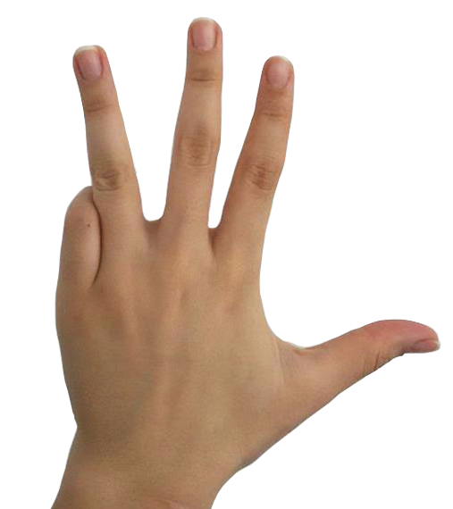
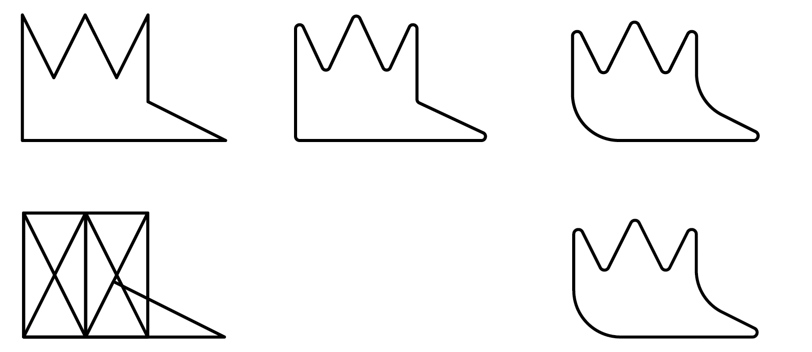

1 Context
Through interviews and brainstormings, we created a panel with images and words that reflect "deafness". We observed that the society express deafness in an institutional and sad way relating it to disability. Also, we observed the tendency to use a representation of hands as a symbol.
2 Target
The Wikilibras user is a young deaf/heard of hearing person who uses the internet as a tool to break social exclusion. She/He uses the app thinking about a future in which the deaf/heard of hearing won’t be seen as a person with physical deficiency and the sign language won’t be a limitation to communication. She/He considers the WikiLibras as a way to this future. Wishing to help with this, this persona is engaged on WikiLibras always looking for new users. This persona enjoys to use the WikiLibras T-shirt, not just because of what it represents but also because she/he likes the logo colors and shapes.
Being deaf is not who she/he is, it is just a characteristic that she/he has as a unique person, that’s why she/he likes to raise curiosity in people who see her/him wearing the WikiLibras T-shirt as opposed to the usual and obvious deaf campaigns related T-shirts.
3.1 Concept
The initials W and L represented with a hand.

3.2 Design
Using geometry I created an icon based on the WL hand.
